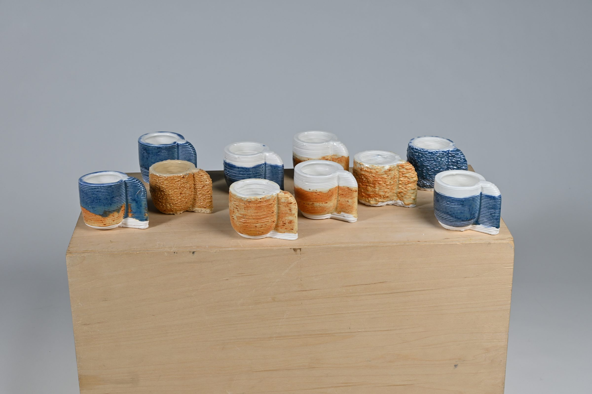
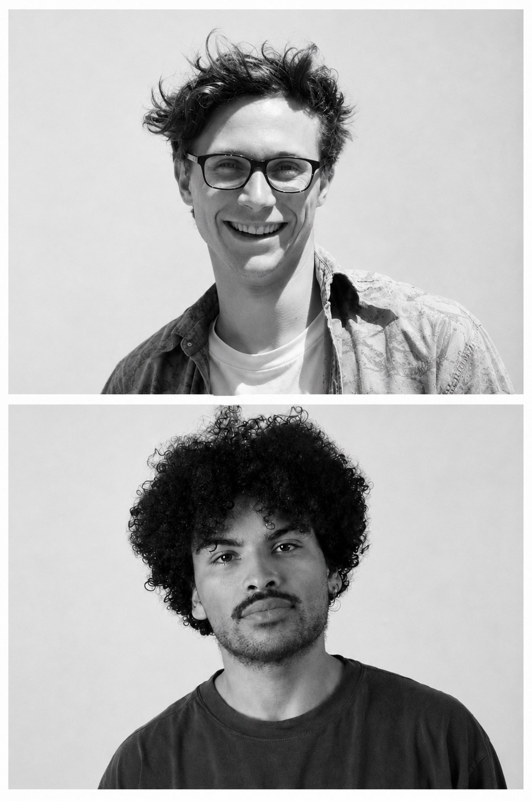
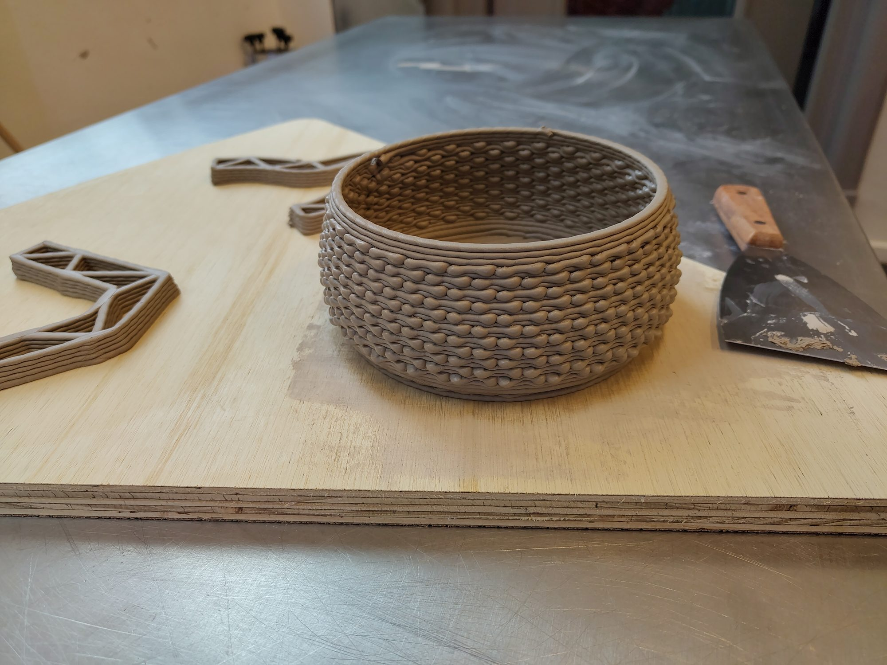

Studio G01
Studio G01 is a design and research studio in Delft specialised in robotic manufacturing and computational design. Founded by Pepijn and Bertalan, two recent TU Delft graduates from the fields of industrial design and architecture.
What we are working towards
We strive to create more knowledge and experience in robotic manufacturing methods and their integration into human arts and crafts. By experimenting with these methods across different materials, we explore the borders of science and art, leaving behind physical artifacts as traces of our research journey.
How it started
We met in the LAMA Lab at the Faculty of Architecture, both using additive manufacturing in our own projects. Coming from architecture and industrial design, we brought different perspectives to the same technology. By exchanging knowledge across computational design, materials and fabrication, we learned from each other and gradually started working together.
How we work
We work by making. Each project starts with a question about the process, and the object is what answers it. We like to learn by doing and embrace our failures, as we've found that lucky mistakes can often lead to new knowledge. Following a research-through-design methodology, our experiments are guided by artistic visions and technological innovations. Ultimately, we are driven by a strong curiosity and explore while making.
Working together
We are always open to conversations with galleries, makers, researchers and others exploring similar ideas and possibilities.
Delft, Netherlands
KVK 42128321
